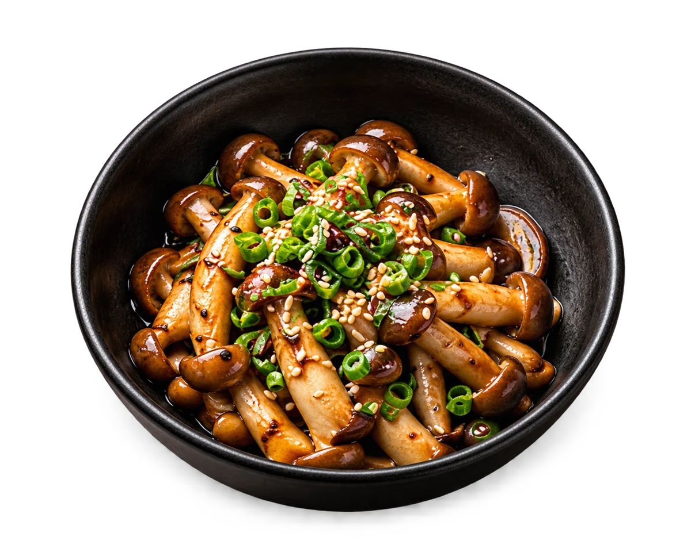
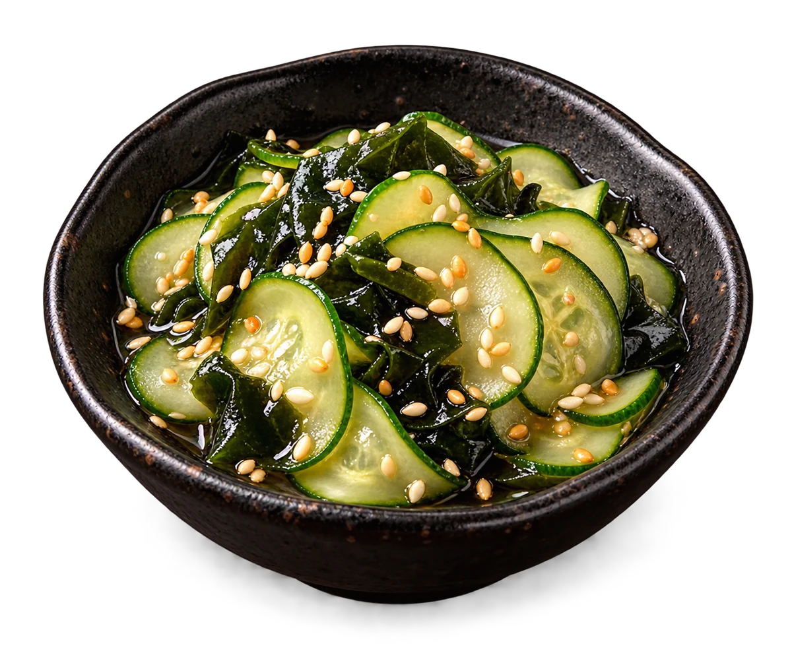
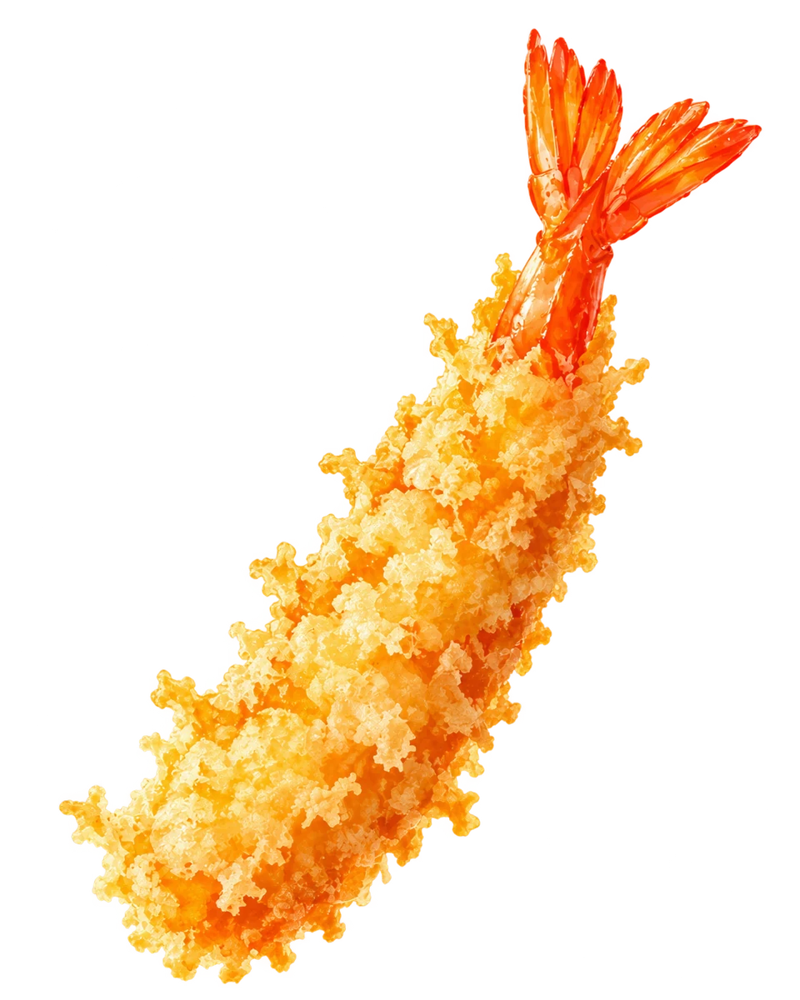
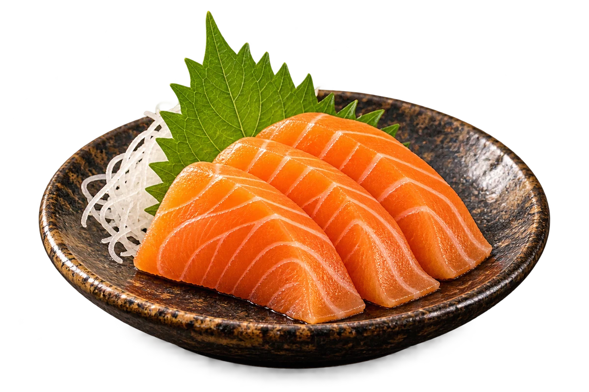
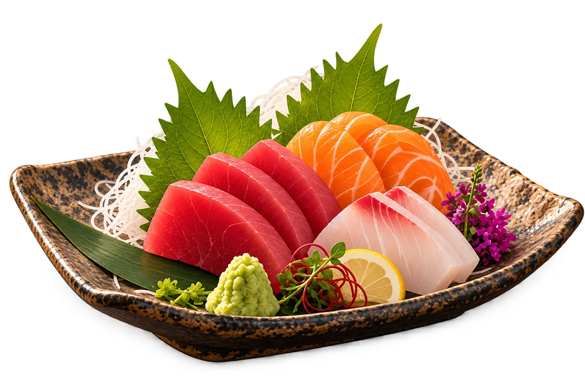
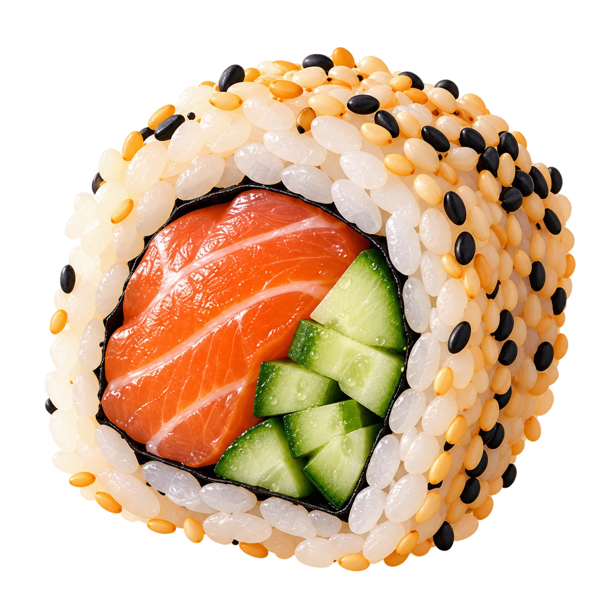
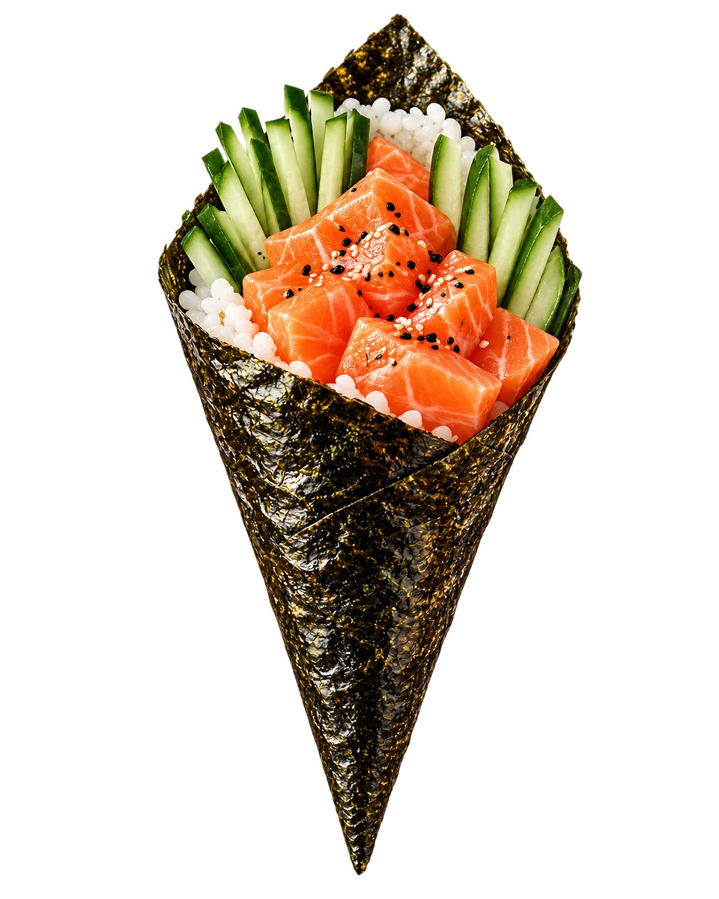

SABORES DO JAPÃO · DESDE 1987
O nosso
cardápio.
Escolha pelo olhar. Descubra os detalhes.
Encontre o sabor do seu próximo encontro.

Para começar
Pequenos começos, cheios de sabor.
前菜 Conhecer o prato
Conhecer o prato 餃子
Gyoza suíno
Pequenos pastéis de carne suína e legumes, com superfície dourada e recheio macio.
Consulte a casa
Conhecer o pratoしめじ
Shimeji
Cogumelos salteados com um toque de shoyu e cebolinha, para começar com sabor.
Consulte a casa
Conhecer o prato酢の物
Sunomono
Pepino em fatias finas com wakame, gergelim e um delicado tempero de vinagre.
Consulte a casa
Conhecer o prato海老天ぷら
Ebi tempura
Camarão envolvido em uma camada delicada e dourada de massa de tempura.
Consulte a casaSushi & sashimi
O cuidado do corte. O equilíbrio do arroz.
鮨・刺身 Conhecer o prato
Conhecer o prato 握り鮨
Nigiri de salmão
A delicadeza de uma fatia de salmão sobre o arroz japonês moldado em uma pequena peça.
Consulte a casa
Conhecer o prato鮭の刺身
Sashimi de salmão
Fatias de salmão que convidam a apreciar o sabor e a textura do peixe.
Consulte a casa
Conhecer o prato刺身盛り合わせ
Sashimi misto
Uma seleção de peixes em fatias, para descobrir nuances de sabor e textura.
Consulte a casa
Conhecer o prato裏巻き
Uramaki de salmão
Arroz por fora, nori por dentro. Salmão e pepino em um encontro delicado de texturas.
Consulte a casaCombinados & temakis
Uma seleção para dividir. Ou um encontro só seu.
盛り合わせConhecer o prato 盛り合わせ
Combinado Naka
Sushis, makis e sashimis em uma seleção que convida a descobrir diferentes cortes e texturas.
Consulte a casaConhecer o prato 小さな盛り合わせ
Naka Mini
Uma seleção menor de sushis e sashimis para experimentar a essência da casa.
Consulte a casa盛り合わせ
Moriawase
Um encontro de peixes em cortes que valorizam a delicadeza de cada ingrediente.
Consulte a casa
Conhecer o prato手巻き
Temaki de salmão
Salmão, arroz japonês e pepino envolvidos pela textura delicada da alga nori.
Consulte a casaDa cozinha quente
Calor, textura e o conforto da cozinha japonesa.
温かい料理 Conhecer o prato
Conhecer o prato ラーメン
Lámen
Macarrão em caldo quente com carne suína, ovo e acompanhamentos japoneses.
Consulte a casa Conhecer o prato
Conhecer o prato 天ぷら
Tempura misto
Camarões e legumes em uma massa leve, com diferentes sabores sob a mesma crocância.
Consulte a casa Conhecer o prato
Conhecer o prato 定食
Teishoku de salmão
Salmão grelhado com arroz japonês, missoshiru e pequenos acompanhamentos.
Consulte a casa Conhecer o prato
Conhecer o prato 焼きそば
Yakisoba
Macarrão salteado com carne, legumes e molho, em um prato cheio de textura.
Consulte a casa